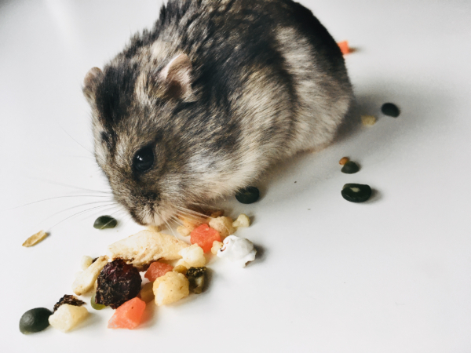

Fun Stuff
Things I like:
- Hamsters! They are my favorite animal! 
- I raise monarch butterflies each summer!
- Arts and Crafts! I love doing anything crafty!
- Perler beads
- Rock painting
- Gem art
- Rainbow loom
- Video Games! Some of my favorites are:
- Outer Wilds
- Undertale
- Subnautica
- Omori